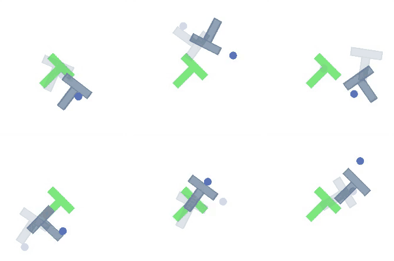
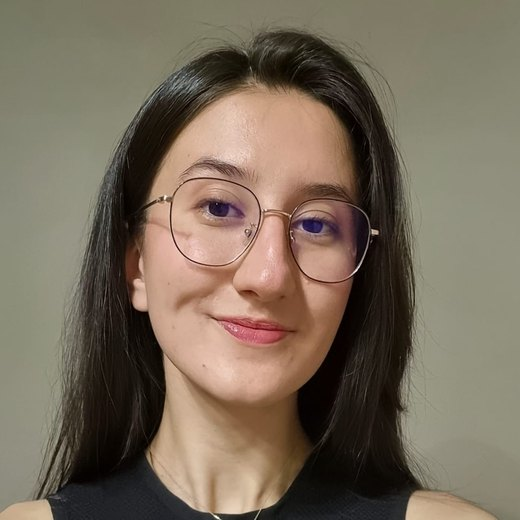
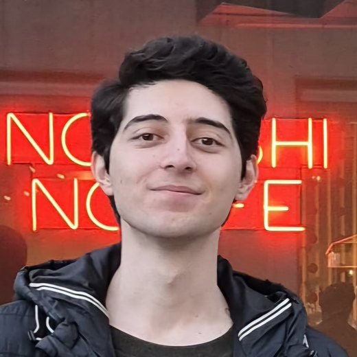
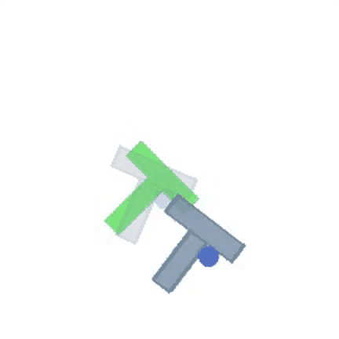

inzva · Final showcase
Imagine first. Then push.
A robot that plans by picturing the future, and why picturing it in bigger steps works better.
Defne Erkan · Oğuz Nurlu · Arda Alpay
October 2026

Agenda
Eight stops, and the two we care about are 6 and 7.
- 01The teamThree of us, and who did what
- 02The task, and the problemPushing a T, and why reacting is not enough
- 03What we built onThe papers, the planner, the benchmark
- 04The data18,685 expert demonstrations, no rewards
- 05Our methodTwo world models at different time scales
- 06ResultsPart 1: our planner. Part 2: a published one
- 07DemoSix episodes, start to finish
- 08Where we go nextThe result we still cannot explain
Who we are
Three of us, one question: can a robot think ahead cheaply?


The task
Push a T into place. No hands, only pushes.
A round pusher has to slide a T-shaped block into a target pose. It can push, but never grab.
It sounds easy and it isn't. The block slides and spins. Push a little off-centre and it turns the wrong way, and you need several more pushes to recover.
So the robot has to think a few moves ahead.

Why not a VLA?
A VLA reacts. It never asks “what happens if I push here?”
Vision-language-action models learn to copy what they saw in demonstrations. That works on familiar ground. But a T's turn depends on exactly where you push, and a model that never predicts consequences can't check a push before making it, or notice it is heading somewhere bad.
What we built on
We changed one thing. The rest is borrowed, deliberately.
-
LeWMlatent world model
The recipe our own model copies, encoder and all. We planned with its released checkpoint first, to check our test bench before trusting it on our own.
published 96%
we measure 87.3% -
Hi-LeWM“Mind the Gap”, 2026
A published hierarchical planner that also picks waypoints before pushes. Part 2 takes it apart using the authors' own trained models.
its waypoints
cost it 22 points - DINO-WMworld model on frozen features A second published reference, built on a frozen vision backbone instead of training its own — a check that our harness does not flatter one design. 84.0% here
-
CEMthe cross-entropy method
The planner itself, untouched: sample plans, keep the best tenth, resample around them. Our contribution changes what it searches over, never how it searches.
300 plans
30 rounds - Push-Tstandard benchmark The task, its demonstrations and its success criterion, all taken as given, so our numbers compare with anyone else's. unmodified
The data
18,685 expert demonstrations. No rewards, no real robot.
episodes
Each an expert pushing the T into place, between 49 and 246 pushes long.
frames
Each one a 224×224 picture, where the pusher is, and the push that was taken.
held back
Split by episode, never by frame. Neighbouring frames are near-copies, so splitting those measures memory, not learning.
The model only ever sees pictures and pushes. It is never told where the T really is, and never told during training whether a push was a good one. 43 GB on disk, and the same file the benchmark's own authors convert from.
World models
A world model lets the robot try pushes in its head.
Imagine
Make up hundreds of possible push sequences. The world model predicts where each one leaves the block.
Score
Which imagined endings are closest to the goal?
Improve
Keep the best tenth, invent new plans around them, and repeat thirty times.
Act
Do the first few pushes of the winner, look at the real scene again, and plan again.
No reward, no trial and error in the real world. Show it a picture of the goal and it works out the pushes on its own.
Our method · the model
A small model that predicts the next 192 numbers.
weights in total, most of them the encoder. Small enough to train the whole thing twice in a day on one desktop GPU.
to train the step-by-step model on an RTX A4000. The bigger-steps model reuses its frozen encoder and takes 2.5.
better at predicting the next scene than assuming nothing moves at all.
Our idea
Looking far ahead is expensive. So we imagine in bigger steps.
Every extra step ahead multiplies the plans to search, and the model's small mistakes pile up. Our idea: first pick a few waypoints, then fill in the pushes between them.
Part 1 · What we found
Bigger steps win, most when the computing budget is tight.
Planning in bigger steps succeeds 12 points more often than planning step by step.
Filling in the details afterwards did not help. The bigger steps alone did all the work.
Five budgets, five seeds each, 250 test episodes per point.
Part 2 · A published planner
We took apart a published planner. Its waypoints are its weak spot.
Hi-LeWM, from the 2026 paper “Mind the Gap”. It also plans waypoints first, then the pushes.
Same robot, same everything. We only swapped its own waypoints for an expert's. Success jumped by 22 points.
Its two published fixes also failed to reproduce when we reran them.
Part 2 · Why
Its imagination fools it.
The planner finds plans its own model rates 9× better than the expert's. Nothing beats the expert in reality, so it is exploiting mistakes in its own imagination.
Turn its chosen waypoints back into pictures and you can see it: the block often smears into a blur. The paper's fix sharpens them, yet success barely moves.

Demo
Six episodes, start to finish. Nothing sped up.
The blue dot is the pusher, the pale green T is where the block has to end up. The planner imagines ahead, makes ten pushes, looks again, then imagines from scratch.
These six were picked because they succeed. Across 250 episodes at this budget our planner succeeds 74% of the time.
Recorded, not live: 600 samples, seed 4. A live run needs a GPU and about a minute an episode.
One lesson, found twice
Never trust a setting you didn't measure.
How far ahead to plan: our first guess, then a measured one
One setting as shipped, then as its authors actually ran it
A setting nobody had measured mattered more than our cleverest idea.
Where we go next
The result we cannot explain is the interesting one.
Why did filling in the details add nothing?
- Give the fine model a looser target. We ask it to hit each waypoint exactly; following the coarse plan approximately may be what actually helps.
- Go deeper. We tested two levels and jumps of two steps. Three levels, and bigger jumps, is the obvious next sweep.
- Beyond Push-T. We dropped the planned test on the benchmark's other tasks for lack of compute, so we cannot yet claim this generalises.
Three questions for its authors
- How were the headline numbers produced? With the library as released, that configuration cannot run at all.
- Why does the shipped setting differ from the one the authors' own diagnostics use, when that one is 32 points better?
- Does the waypoint encoder memorise its training data? There is no held-out split to check it against.
The one we would run first: in both parts the waypoints are the weak spot. Forcing them to look like scenes that can really happen, rather than sharpening them after the fact, is the experiment we would do next.
To sum up
Imagining in bigger steps helps. Imagining good waypoints is the hard part.
- Part 1Bigger steps beat step-by-step planning, by up to 12 points, most when compute is tight.
- Part 2A published planner loses 22 points to its own waypoints, because it fools its own imagination.
Thank you. Questions?